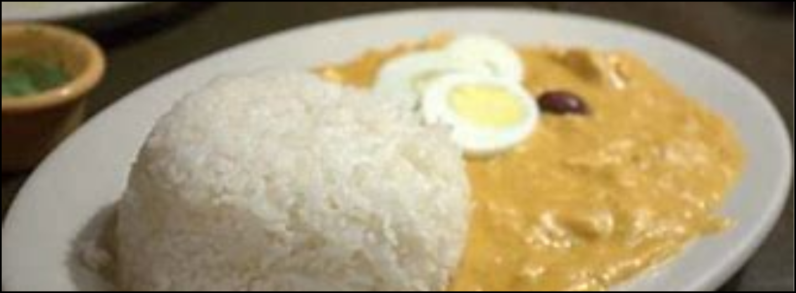
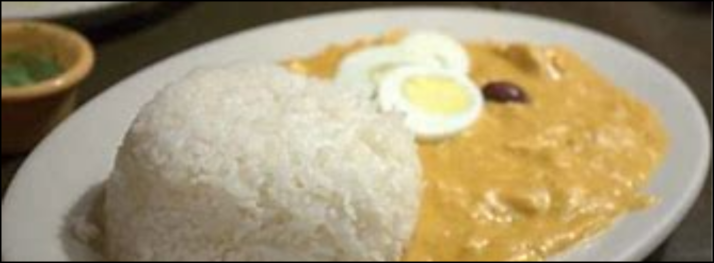

Menú del mes
Ají de
Gallina
 

El ají de gallina, es uno de los mejores platos peruanos. Aquí va la receta.
Ingredientes (8 porciones)
- 12 rebanadas de pan de molde
- 1 pollo en 8 presas
- 2 1/2 tazas de cebolla picada
- 3 cucharadas de aceite
- 1 cucharadite de ajo picado
- 2 cucharadas de ají amarillo molido
- 150 gramos de queso parmesano rallado
- 200 gramos de nueces picadas
- 8 papas amarillas cocidas, peladas y en rodajas
- 4 huevos cocidos, en rodajas
- Sal
- 8 aceitunas de botija* (Opcional)
Preparación (80 minutos)
- Cocina el pollo en una olla con 3 litros de agua y con una pizca de sal por 50 minutos, o hasta que esté suave. Cuela, deshilacha el pollo y remoja el pan de molde en el caldo por los siguientes 15 minutos. Cuela y reserva por separado el pan y las 2 tazas de caldo.
- Calienta el aceite en una olla a fuego medio y dora la cebolla por 3 minutos. De ahí, agrega el ajo, y cocina hasta que pasen 3 minutos. Agrega el ají molido y mezcla. Sazona con sal.
- Echa el pan colado con el caldo, el queso parmesano y las nueces. Cocina estos ingredientes removiendo hasta que se espese ligeramente. Incorpora el pollo deshilachado, mezcla y hierva a fuego bajo por 5 minutos adicionales. Comprueba la sazón.
- Sirva el ají con las papas, los huevos y las aceitunas*.